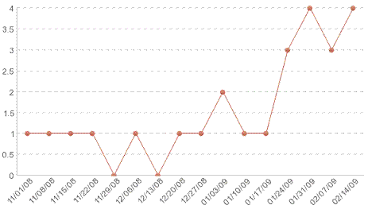

| Blocking Defects |
 |
|
PurposeA Blocking Defect is defined to be a high priority defect that is currently open (not closed) and has an associated requirement. The assumption is that work on the requirement cannot proceed until the defect is resolved. Teams monitor blocking defects in order to understand their impact on velocity. DefinitionCount: Total Number of Blocking Defects in each iteration. Group by severity. AnalysisA good way to monitor blocking defects is to use a trend line. Plot the number of blocking defects on the Y axis and iterations on the X axis. Monitor blocking defects by severity to ensure high severity defects are removed first. Create a drill down report to see blocking defects with their associated requirements.
A high number of blocking defects in the backlog may indicate that:
The team needs to focus on addressing any uncertainty in the project that is impeding progress. They must also work to communicate problems and dependencies. Too many blocking defects will affect the team's velocity, impacting the project schedule and cost. In the example below, which describes the number of defects for the Smarter-Living project in the Smarter Planet program, blocking defects are increasing late in the lifecycle. This can have serious implications to the project in terms of schedule, cost, and scope. 
|
Licensed Materials - Property of IBM |